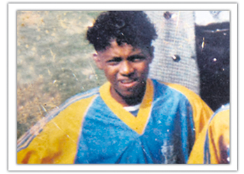
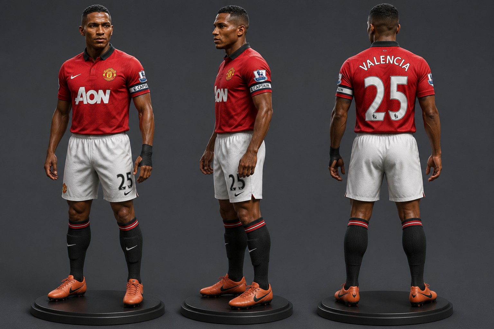
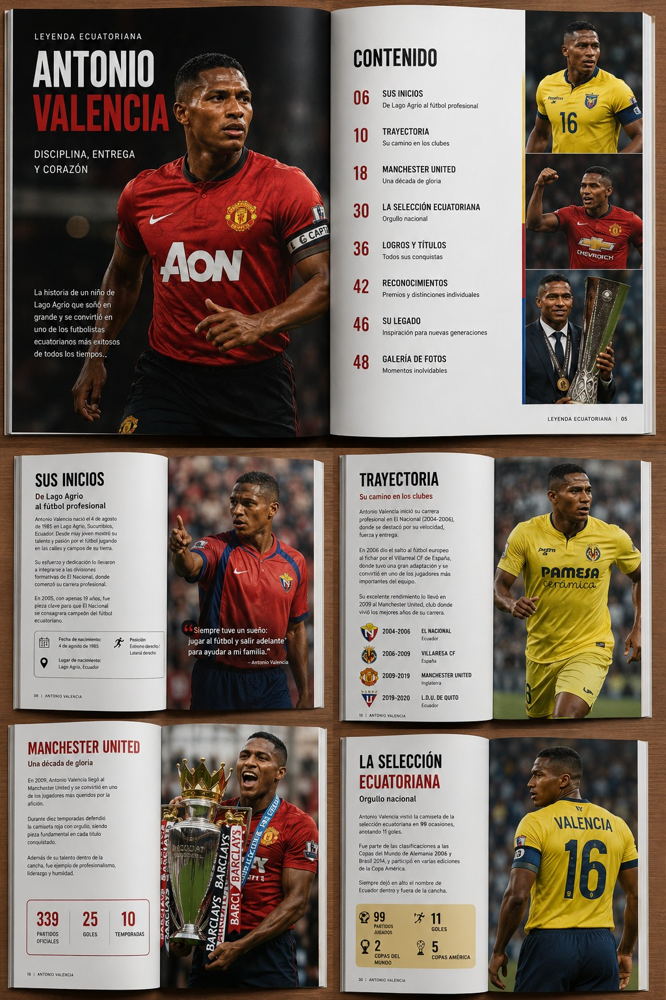
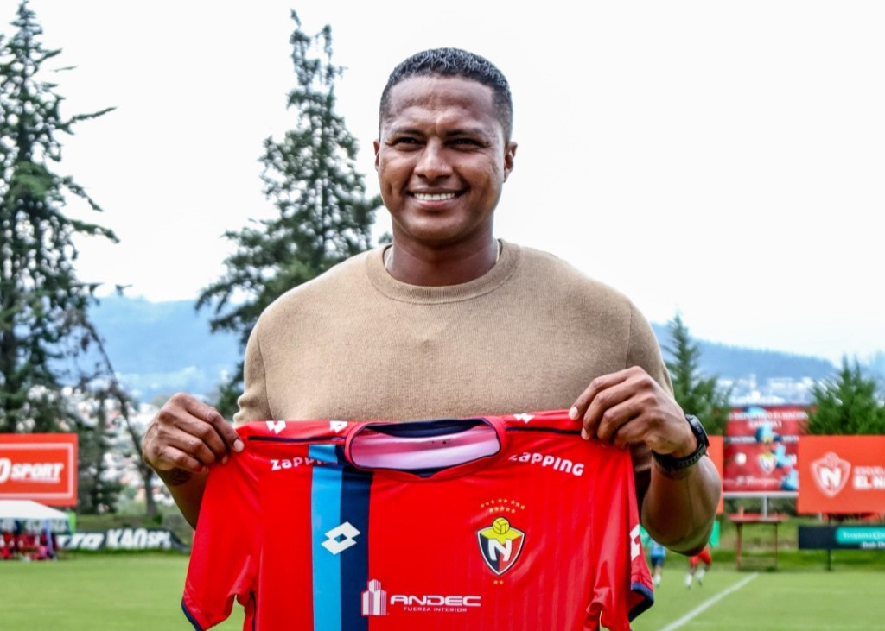
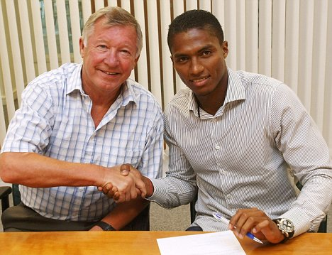
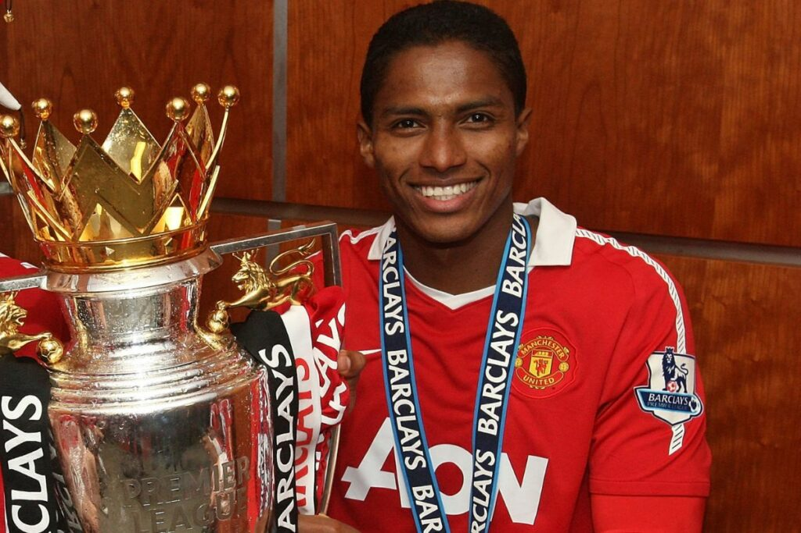
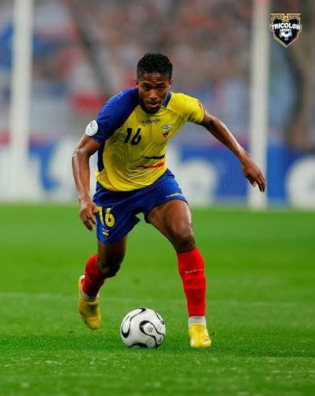
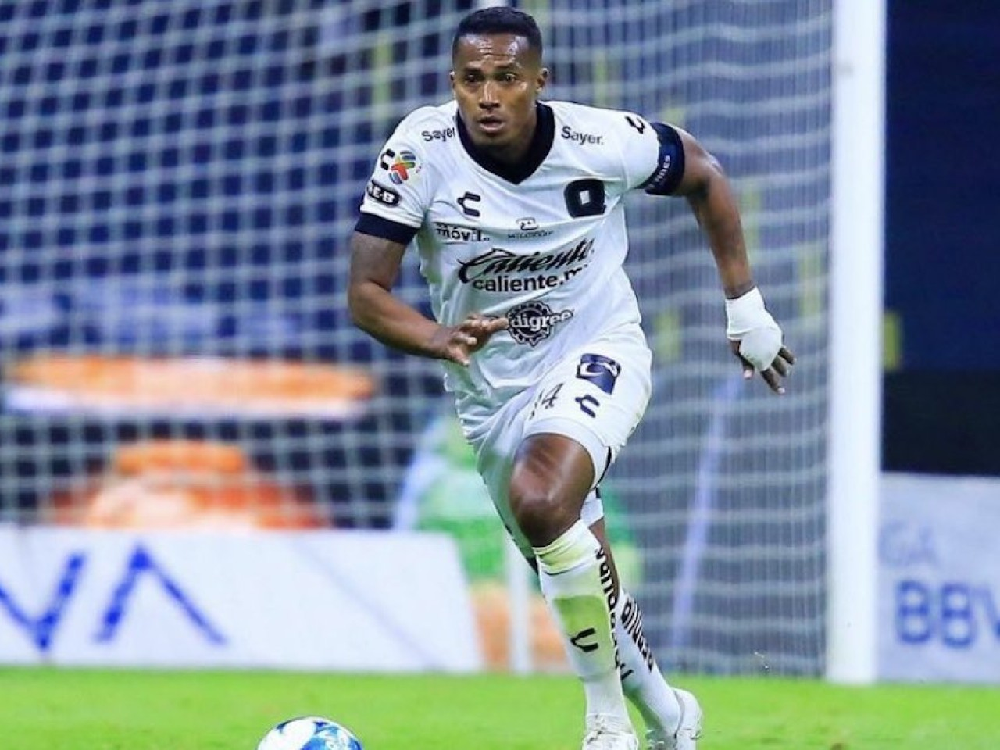

Su historia
CLuis Antonio Valencia Mosquera nació en Nueva Loja, Ecuador. Desde muy joven mostró interés por el fútbol y comenzó su carrera profesional en el Club Deportivo El Nacional.
Ver másCLuis Antonio Valencia Mosquera nació en Nueva Loja, Ecuador. Desde muy joven mostró interés por el fútbol y comenzó su carrera profesional en el Club Deportivo El Nacional.
Ver másRecorre su carrera en los principales clubes de Ecuador, España, Inglaterra y México.
Ver másDescubre sus títulos, reconocimientos, récords y momentos más importantes dentro del fútbol profesional.
Ver más
Biografía
Luis Antonio Valencia Mosquera nació el 4 de agosto de 1985 en Nueva Loja, provincia de Sucumbíos, Ecuador. Creció en una familia trabajadora y desde pequeño encontró en el fútbol una oportunidad para desarrollar su talento.
Durante su juventud se trasladó a Quito para formar parte de las divisiones inferiores de El Nacional. Su velocidad, fuerza física y capacidad para jugar por la banda le permitieron destacar rápidamente y debutar como futbolista profesional.
Sus buenas actuaciones llamaron la atención de clubes europeos. Con el paso de los años logró convertirse en uno de los jugadores ecuatorianos más reconocidos internacionalmente y en un referente de la selección nacional.
Trayectoria profesional
Antonio Valencia inició su carrera profesional en el Club Deportivo El Nacional. Sus actuaciones en el fútbol ecuatoriano le permitieron dar el salto al fútbol europeo.
Llegó a España para vincularse con el Villarreal. Más tarde jugó cedido en el Recreativo de Huelva, donde adquirió experiencia en el fútbol europeo.
En Inglaterra destacó por su velocidad, fuerza y capacidad para jugar por la banda derecha. Su rendimiento llamó la atención de uno de los clubes más importantes del mundo.
Vivió la etapa más importante de su carrera. Ganó títulos nacionales e internacionales, utilizó el número 7 y llegó a ser capitán del equipo.
Regresó al fútbol ecuatoriano para jugar en Liga de Quito, donde continuó demostrando experiencia, liderazgo y compromiso dentro del campo.
Su última etapa como futbolista profesional fue en el Querétaro de México, antes de anunciar su retiro del fútbol.
Títulos y reconocimientos
Antonio Valencia fue campeón de la liga inglesa con el Manchester United durante una de las etapas más importantes de su carrera profesional.
Formó parte del equipo que conquistó la UEFA Europa League, uno de los títulos internacionales más importantes obtenidos por el club durante su trayectoria.
Ganó la Copa de Inglaterra y se consolidó como un jugador importante por su velocidad, disciplina y capacidad para defender y atacar por la banda derecha.
También consiguió la Copa de la Liga inglesa como integrante del Manchester United.
Levantó varias veces la Community Shield, torneo que enfrenta a los campeones de las principales competiciones inglesas.
Uno de sus mayores reconocimientos fue portar la cinta de capitán del Manchester United, convirtiéndose en un referente para el fútbol ecuatoriano.

Explora una representación tridimensional inspirada en Antonio Valencia. Esta sección permite observar al jugador desde una perspectiva diferente y resaltar su imagen como una de las figuras más importantes del fútbol ecuatoriano.
Explorar
Accede a una revista digital donde encontrarás información sobre su infancia, trayectoria profesional, títulos, selección ecuatoriana y legado deportivo.
Leer revistaRepresentación visual
Esta representación visual está inspirada en Antonio Valencia y busca destacar su velocidad, fortaleza física y liderazgo dentro del campo de juego.
La figura puede ser utilizada como recurso educativo para complementar la información presentada en la página web.
Galería





